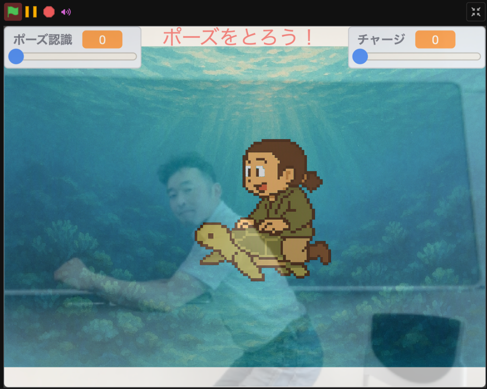

TMPose紙芝居
ポーズで進めるAIインタラクティブ紙芝居
TurboWarpとTMPoseを利用し、参加者がカメラの前でポーズを取ることで物語を進める紙芝居システムです。

Web版を開く
DSL 3.2系の紙芝居アプリを、組み込み台本「浦島太郎」で起動します。PC・スマートフォンのカメラの前でポーズを取り、物語を進めてプレイできます。
DSL 3.2版「浦島太郎」へポーズで進めるAIインタラクティブ紙芝居
TurboWarpとTMPoseを利用し、参加者がカメラの前でポーズを取ることで物語を進める紙芝居システムです。

DSL 3.2系の紙芝居アプリを、組み込み台本「浦島太郎」で起動します。PC・スマートフォンのカメラの前でポーズを取り、物語を進めてプレイできます。
DSL 3.2版「浦島太郎」へ